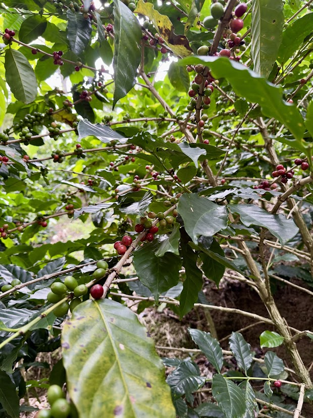
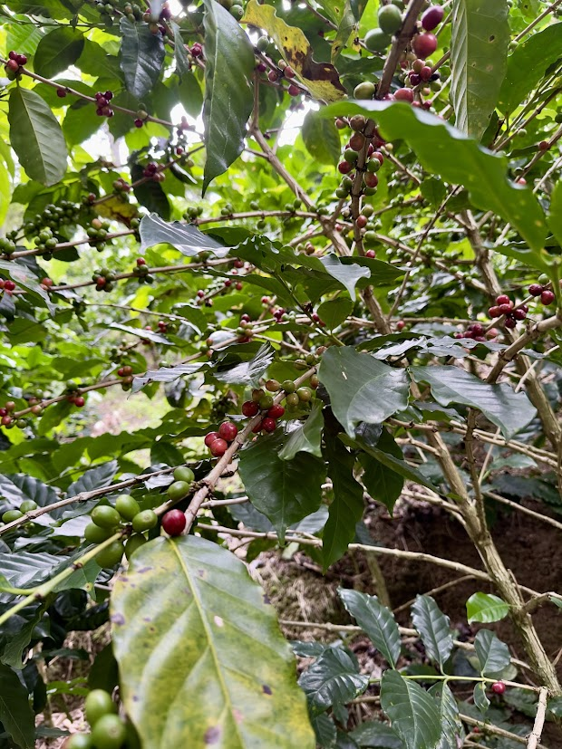
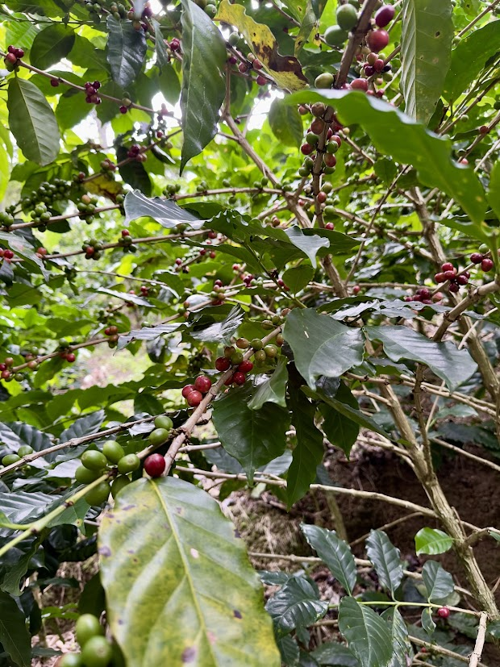
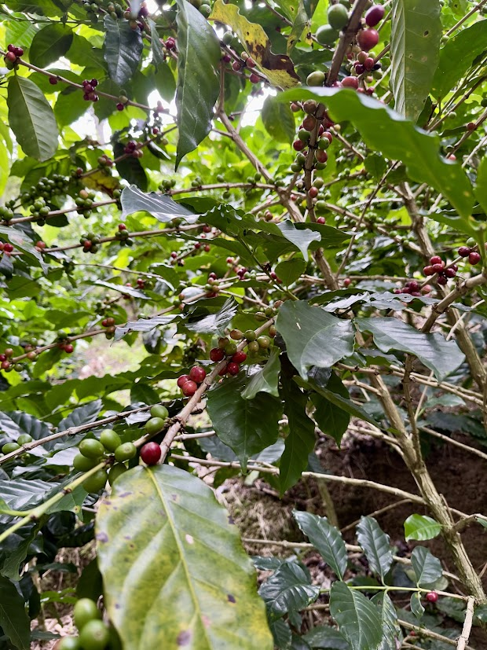

 

Promovemos la agricultura sostenible y el trabajo colaborativo, conectando a los estudiantes con la tierra y la producción limpia de alimentos saludables.
Los estudiantes cultivan hortalizas y hierbas aromáticas aplicando técnicas agroecológicas que fortalecen el respeto por el medio ambiente.

La huerta fomenta valores de cooperación, responsabilidad y conciencia ambiental en cada jornada de siembra y cosecha.
Transformamos los residuos orgánicos del comedor y la huerta en abono natural, cerrando el ciclo de la materia y promoviendo el aprovechamiento de los desechos.
El compost generado se utiliza en la huerta, reduciendo la cantidad de residuos y mejorando la fertilidad del suelo.

Incorporamos lombrices rojas californianas para optimizar la descomposición y crear un humus rico en nutrientes.
Rescatamos el valor del café como símbolo de nuestra identidad cultural y agrícola, promoviendo su cultivo responsable y sostenible.
Los estudiantes conocen las etapas del cultivo del café, desde la semilla hasta la cosecha, aprendiendo prácticas agrícolas sostenibles.

El proyecto busca transformar los granos cosechados y explorar procesos de tostado y empaque escolar.
Educamos en la clasificación y reutilización de residuos, impulsando una cultura ecológica que disminuye la contaminación en la institución.
Los estudiantes aprenden a clasificar papel, plástico, metal y residuos orgánicos mediante actividades lúdicas y creativas.

Con materiales reutilizados elaboran obras artísticas y objetos útiles, mostrando que reciclar también es crear.
Elaboramos jabones ecológicos con aceites naturales y aromas del entorno, promoviendo la economía circular y el emprendimiento estudiantil.
Aprendemos a fabricar jabones biodegradables que cuidan la piel y el medio ambiente.

Los productos elaborados son parte de ferias escolares que incentivan la creatividad y la autogestión económica.
Exploraremos el fascinante mundo de las abejas, comprendiendo su papel vital en la polinización y la biodiversidad.
El proyecto busca enseñar sobre la importancia de las abejas y los cuidados necesarios para mantener un equilibrio ecológico.